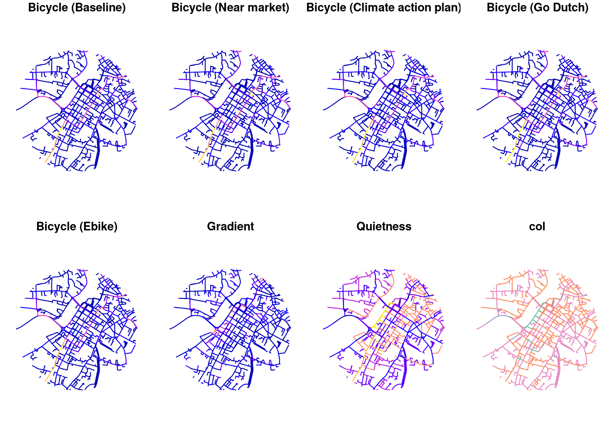

devtools::load_all(here::here())ℹ Loading netvislibrary(sf)Linking to GEOS 3.11.1, GDAL 3.6.4, PROJ 9.1.1; sf_use_s2() is TRUEdevtools::load_all(here::here())ℹ Loading netvislibrary(sf)Linking to GEOS 3.11.1, GDAL 3.6.4, PROJ 9.1.1; sf_use_s2() is TRUEplot(rnet_limerick)
sf::write_sf(rnet_limerick, "rnet_limerick.geojson")Warning in CPL_write_ogr(obj, dsn, layer, driver,
as.character(dataset_options), : GDAL Error 6: DeleteLayer() not supported by
this dataset.Now we’ll convert those to rnet_limerick.pmtiles:
tippecanoe -o rnet_limerick.pmtiles -zg rnet_limerick.geojsonNow we’ll read them back in:
library(leafem)
library(leaflet)
url_rivers = "https://vector-tiles-data.s3.eu-central-1.amazonaws.com/rivers_africa.pmtiles"
leaflet() %>%
addTiles() %>%
addPMPolylines(
url = url_rivers
, layerId = "rivers"
, group = "rivers"
, style = paintRules(
layer = "rivers_africa"
, color = "blue"
)
) %>%
setView(24, 2.5, 4)f_rivers = basename(url_rivers)
if (!file.exists(f_rivers)) {
download.file(url_rivers, f_rivers)
}u_routes = "https://itsleeds.github.io/netvis/rnet_limerick.pmtiles"
leaflet() %>%
addTiles() %>%
addPMPolylines(
# url = paste0("pmtiles://", f_rivers)
url = u_routes
, layerId = "rnet_limerick"
# , group = "rivers"
, style = paintRules(
layer = "rnet_limerick"
, color = "blue"
)
) %>%
setView(-5, 52, 6)